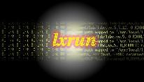

lxrun Linux Applications
Install Testing Pass 2
Against version 0.9.2sco1
Acrobat-3.02 - installed. Works well
Communicator 4.5 - installed works - problems with plugin execution
(exact taxonomy undetermined)
Star Office 4.0 - Not retested - no longer readily available
StarOffice 5.0 - problems with missing libs (??)
WordPerfect 7 - not retested - no longer readily available
WordPerfect 8 - installs works - some issues with exec error message at
startup and shutdown
ApplixWare 4.3.7 -
RealAudio/Video Player -
Ac3d - AutoCAD lookalike
Mind - Motif GUI builder
Xess3 - Spreadsheet
Kaos - fractal/Mandelbrot explorer
Initial Install Testing for UW7
Against version 0.9.2sco0 (development)
Acrobat3.02 - Works well
Communicator4.5 - works (caveat itimer disabled but works)
Star Office 4.0 - "
Ac3d - (AutoCAD lookalike) Works well
Mind - Motif GUI builder
Xess3 - Spreadsheet
ApplixWare - wouldnt install (demo) lxrun OR linux
Corel WordPerfect 8 - not tried
WordPerfect 7 - Demo doesn't run on RedHat 4.2 Linux,either
Real Audio/Video Player - untested but worked before mods
StarOffice v4 - works
Linux packaged application binaries (from RedHat4.2):
arena
attraction
bash
bsh
cat
decayscreen
flame
greynetic
halo
helix
hopalong
hXpercube
ico
ls
lyx - WYSIWYG Editor
maze
moonclock
noseguy
pedal
ping
pyro
qix
rclock
rocks
rorschach
slidescreen
spider
tcsh
vi
x11perf
x3270
xanim
xaos
xbill
xboing
xcmap
xcubes
xdaliclock
xdemineur
xdino
xearth
xedit
xev
xevil
xeyes
xfm
xjed
xjewel
xlander
xlsatoms
zsh
(hops@sco.com)
$ Last Modified: $Date: 1999/03/09 22:43:53 $